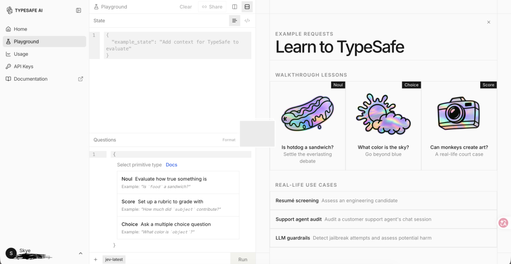
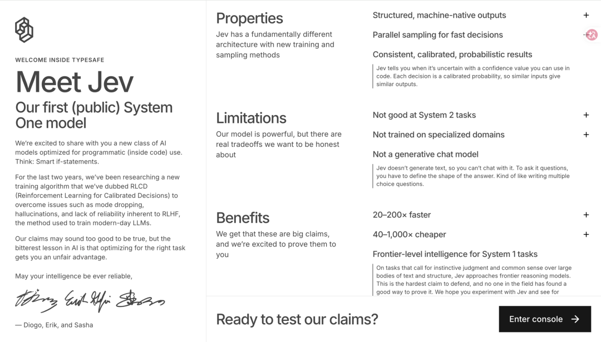
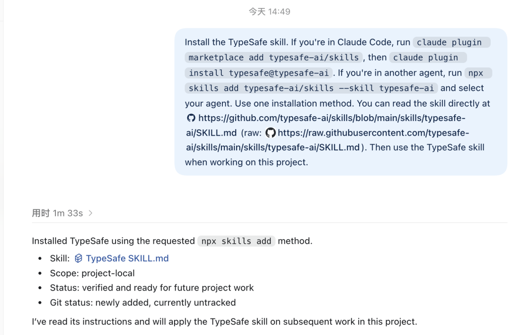
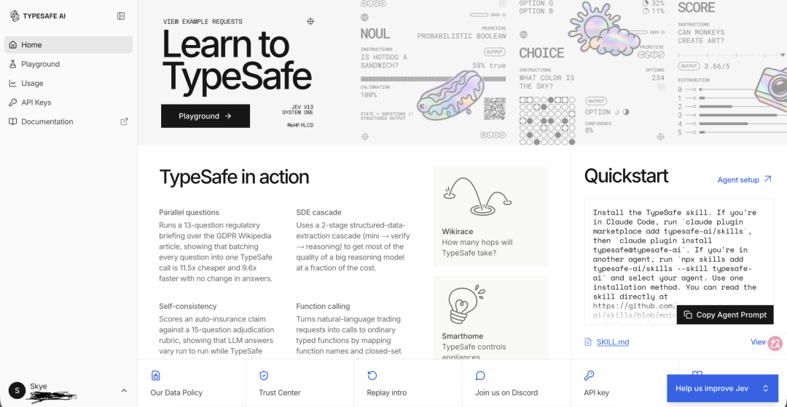
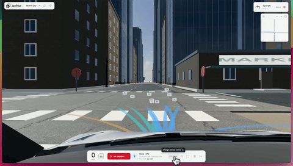

AI AGENT · DECISION
过去几年，AI 的进化路线非常明确： 让模型越来越聪明 。GPT、Claude、Gemini 等大语言模型不断提升理解与生成能力，把 AI 的语言水平推到了接近人类的高度。它们能写文章、写代码、分析资料，甚至帮人完成相当复杂的任务。
但当 AI 从聊天窗口走向真实应用，一个新的问题浮了上来： 会思考，不代表会行动 。
很多人想象中的 AI Agent，是一个 超级大模型包办一切 ：理解用户需求、调用工具、完成任务。但真正搭过 Agent 系统之后会发现，复杂任务远不只是「生成答案」这么简单。
AI 经常需要面对各种选择—— 下一步应该调用哪个工具 ？这个任务应该交给哪个模型？当前状态下应该执行什么动作？大模型会做大量简单、重复的决策任务，会产生不必要的 token 消耗和推理开销。

Jev推荐应用的三种情境Noul Choice Score
📌 本文看点
01
Jev 是一个怎样的模型
02
Agent 为什么需要决策能力
03
有趣案例：JevPilot
DECISION LAYER
从自动驾驶到机器人：AI 也需要「决策层」
在自动驾驶和机器人领域， 「大脑—小脑」的架构 已经被讨论了很多年。大模型更像大脑，负责理解环境、制定目标；而更底层的控制系统负责快速响应和执行。
一辆自动驾驶汽车不可能每次遇到障碍，都调用一个超大模型思考几秒钟。它需要在 极短时间内做出判断 ：刹车、变道，还是继续行驶？机器人看到桌上的杯子，也不需要生成一篇文章解释为什么要拿杯子，它需要快速决定：现在抓取、等待，还是先做别的事。
因此在物理世界里，智能系统除了需要理解世界，还需要一个 能够快速做出选择的模块 。而类似的问题，也正在软件 Agent 的世界里出现。
DECISION MODEL
Jev：不是聊天模型，而是决策模型
这正是 Jev 诞生的背景。它并不是一个传统意义上的聊天模型——如果说 GPT 更像一位知识丰富的研究员，能够理解大量信息并生成内容，那么 Jev 更像一个 专门负责判断的决策模型 。
它关注的问题从来不是「请写一段关于这个问题的分析」，而是 「在当前状态下，下一步应该选择什么」 。我也申请通过了Jev的内测使用，在首页Jev也介绍了他可以做什么，不能做什么。简而言之，他是一个通过「直觉」决策的模型，更少的token，更快的速度，也意味着他要配合其他大模型来使用。

用户消息
「我的订单一直没有收到，我想退钱。」
一个客服 Agent 收到这句话之后，传统大语言模型可能会生成一段客服回复，先致歉，再请对方提供订单号；但对自动化系统来说，更重要的问题其实是：这个请求 应该进入哪个流程 ？退款、查询物流，还是转人工？
Jev 的作用，就是在这些候选选项之间快速完成判断，并 输出结构化结果 ，让系统继续往下执行。
你可以在任意Agent工作台中安装这个Skill，然后配置一个API KEY，就可以使用了。


AGENT ERA
AI Agent 时代，需要更好的决策能力
这种能力在 AI Agent 时代会越来越重要。未来的 AI 系统 不会只有一个模型完成所有事情 ，而可能是多个模型协同工作——有负责理解用户需求的大模型，有负责搜索和分析的模型，也有负责执行任务的工具系统。
那么中间就需要一个模块来判断： 当前任务应该走哪条路径 。
比如一个用户提出需求之后，系统需要先判断这是代码任务、研究任务，还是图像生成任务，然后调用对应的能力。这类场景本质上都是决策问题。
过去很多系统会直接让大语言模型完成这些判断，但对大量简单、高频的选择任务来说，一个 专门的决策模型可能更加高效 。业内常说的 Router，本质上就是这类决策能力的一种工程实现。
很多场景要的，其实不是生成，而是判断
CASE STUDY
JevPilot：让 Jev参与自动驾驶决策
直觉型的控制模型，在物理智能中常被讨论和研究，但在纯软件大模型和agent中确实是创新。最近一个很有意思的开源案例 JevPilot ，就是把 Jev模型 应用到了自动驾驶模拟中。

用Jev做自动驾驶的决策：https://github.com/standardagents/jevpilot
容易误解 Jev 并不负责直接看懂摄像头画面，也不控制方向盘，它只负责判断。
自动驾驶系统会先把复杂环境 整理成结构化信息 ——当前车辆速度、周围车辆位置、可行驶路径、交通信号状态——然后交给 Jev：在当前情况下，车辆下一步应该选择什么动作？是加速通过、减速停车，还是变道绕行，走什么样的轨迹？活生生就很快复线了智驾的RVIZ可视化和Planning的轨迹规划决策。
Jev 输出一个决策结果， 车辆控制系统再执行动作 。
这个案例有意思的地方，在于它 展示了一种纯软的Agent AI 系统架构 ——不同模型负责不同的事情：大脑模型负责「看到什么，未来可能发生什么」，小脑模型负责「现在应该怎么选择」。
EPILOGUE
AI 的下一阶段：从理解世界到选择行动
从自动驾驶到机器人，再到软件 Agent，背后的逻辑其实是一样的。过去十年，AI 最大的突破是让机器逐渐拥有了 理解世界的能力 ；而下一阶段，AI 需要解决的是如何在复杂环境中 快速做出正确选择 。
Jev 探索的，就是这一层能力——让 AI 从「会回答问题但很费钱」，进一步走向 「通过直觉做决定」 。
未来真正智能的系统，可能不会只有一个超级大脑，而会像人类一样， 由多个不同能力的模块协同工作 ：有负责理解的部分，有负责判断的部分，也有负责执行的部分。
「而这种快速、可靠的直觉式判断能力，可能正是连接数字智能与现实世界之间，缺失的一环。」
END
我是李阿由：Learn in Public.Think Deeply.Build Foward.
如果你觉得今天这篇有收获，欢迎 点赞、在看、转发 三连，我们下篇见。